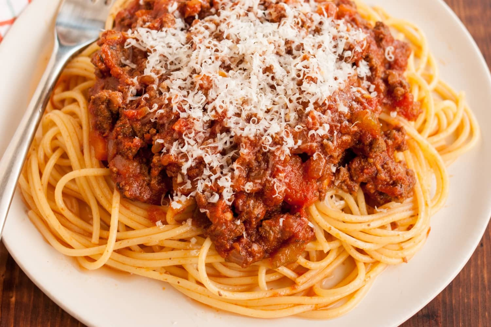

Mum's Spaghetti Bolognese

Description
The ultimate comfort food which only takes a fraction of the time!
A very simple but tasty meal, everytime!
Ingredients
- .13 (16 ounce) package spaghetti
- ¾ teaspoon olive oil
- .38 slices bacon, diced
- .13 large onion, finely chopped
- .13 stalk celery, finely chopped
- .13 carrot, finely chopped
- ⅛ teaspoon dried oregano
- .38 cloves garlic, minced
- .13 pound lean ground beef
- ¾ teaspoon balsamic vinegar
- ¼ (28 ounce) cans crushed tomatoes
- ¾ teaspoon tomato paste
- ¼ teaspoon white sugar
- salt and ground black pepper to taste
- ¾ teaspoon chopped fresh basil
- ½ tablespoon freshly grated Parmesan cheese
- Bring a large pot of lightly salted water to a rolling boil. Cook the spaghetti in the boiling water until cooked through yet firm to the bite, about 12 minutes; drain.
- Heat the olive oil in a large pot over medium heat. Cook the bacon in the oil until crisp, 8 to 10 minutes. Stir the onion, celery, carrot, and oregano into the bacon; continue cooking until the vegetables begin to soften, another 8 to 10 minutes. Add the garlic and cook until fragrant, about 2 minutes. Crumble the ground beef into the vegetable mixture; cook and stir until the beef is completely cooked and no longer pink, 8 to 10 minutes.
- Pour the balsamic vinegar over the ground beef mixture; allow to simmer until the liquid evaporates, about 5 minutes. Stir the crushed tomatoes, tomato paste, and sugar into the ground beef mixture; bring the mixture to a boil, season with salt and black pepper, and remove from heat. Stir the fresh basil into the mixture.
- Ladle the sauce over the cooked spaghetti. Top with Parmesan cheese to serve.